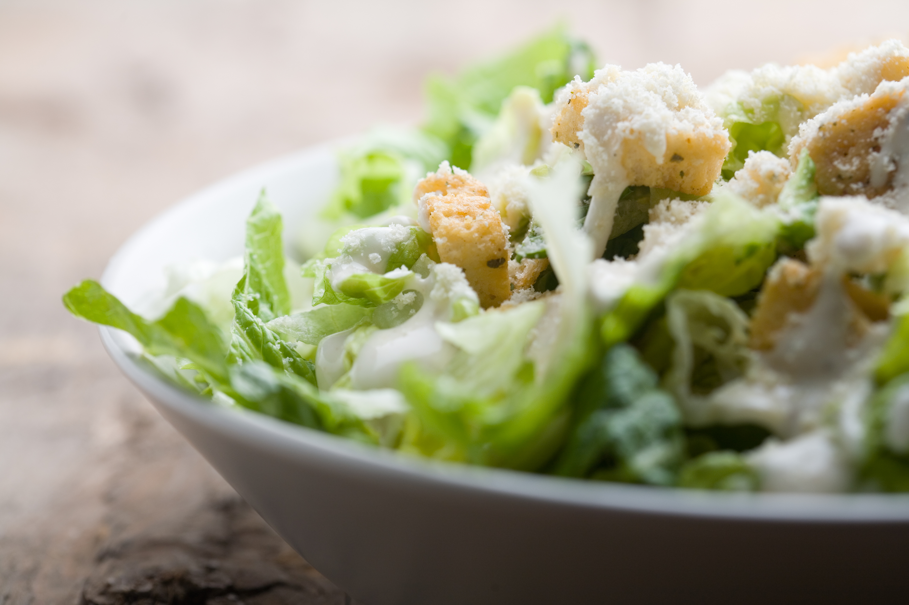

Caesar Salad Dressing Recipe

Ingredients
- 2 small garlic cloves (minced)
- 1 teaspoon anchovy paste
- 2 tablespoons freshly squeezed lemon juice
- 1 teaspoon dijon mustard
- 1 teaspoon Worcestershire
- 1 cup of mayo
- 1/2 cup of parmigiano-reggiano
- 1/4 teaspoon salt
- 1/4 teaspoon pepper
10 servings
1 teaspoon anchovy paste = 2 filets
1 tablespoon = 3 teaspoons
Instructions
-
Whisk together the garlic, anchovy paste, lemon juice,
dijon mustard, and Worcestershire.
-
Add the mayo, parmigiano-reggiano, salt and pepper and
whisk until well combined.
-
Adjust to your liking, and enjoy!
Original Recipe